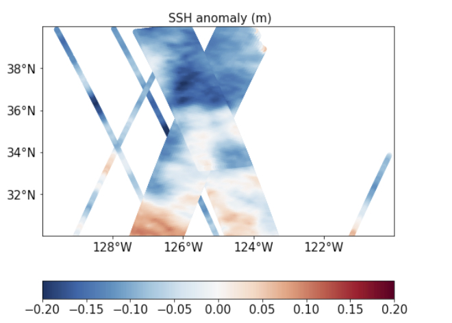
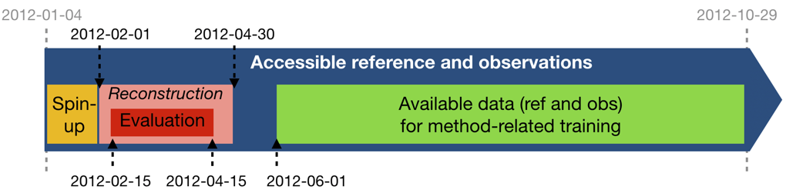

Mapping and separation Data Challenge
{kind=link}
Context and Motivation
The goal is to investigate how to best reconstruct sequences of Sea Surface Height (SSH) maps and separate the balanced motions and the internal waves in the Californian SWOT cross-over from artificial SWOT satellite and conventional nadir altimetry observations. This data challenge follows an Observation System Simulation Experiment framework: “reference” full SSH are from a numerical simulation with a realistic, high-resolution ocean circulation model: the reference simulation. Satellite observations are simulated by sampling the reference simulation based on realistic orbits of past, existing or future altimetry satellites. A baseline reconstruction method is provided (see below) and the practical goal of the challenge is to beat this baseline according to scores also described below and in Jupyter notebooks.

Data Challenge setup
Reference simulation
The reference simulation is the MITgcm LLC4320 simulation. The simulation is run with tidal forcing. The SSH maps are available hourly. The barotropic tide and the dac have been removed from the reference run. Also, the balanced motions and the internal waves have been seperated using spatio-temporal filters
Observations
The SSH observations are SWOT and conventional nadirs altimeter data simulated on the reference run. Hence, the barotropic tide is also not present in the SWOT observations.
Three mapping experiments can be performed using SWOT: - without observation errors: SWOT no noise (‘ssh_model’ variable), - with KaRIn errors only: SWOT KaRIn noise (‘ssh_karin’ variable), - with all observation errors: SWOT all noise (‘ssh_obs’ variable).
{kind=link}
As an illustration, see the demo_perform_oi notebook that performs an OI reconstruction in these three experiments.
Data sequence and use
The SSH reconstructions are assessed over the period from 2012-02-01 to 2012-04-30: 89 days.
For reconstruction methods that need a spin-up, the observations can be used from 2012-01-04 until the beginning of the evaluation period. This spin-up period is not included in the evaluation. For reconstruction methods that need learning from full fields, the reference data and the observations can be used from 2012-06-01 to 2012-10-29.
The reference data between 2012-05-01 and 2012-05-31 should never be used so that any learning period or other method-related-training period can be considered uncorrelated to the evaluation period.
The data are available on the opendap. For more information, you can check the Download the data. section.
{kind=link}
Evaluation
The metrics used to evaluate the mapping and separation are: